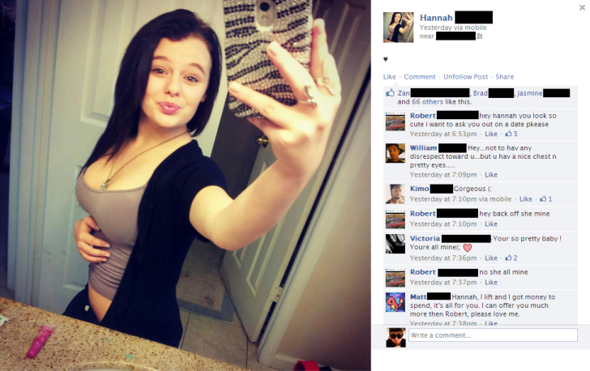

< < < Back
Dictionary Of American Girlspeak, Volume II – Return Of Kings
We pick up our lessons in the complex argot of the American woman where we left off last time.
Audrey Hepburn
1. Celebrated British actress whose iconic performances in a series of Hollywood film classics throughout the 1950s and 60s gained her international recognition and fame. 2. Girls’ go-to example of a woman who could “pull off” pixie cut, despite the fact that she—like every other woman with a short haircut—looked ten times better with it long.
Best Friend
1. A meaningless title that, despite having the connotation of exclusivity by its use of the superlative, is given out to multiple people. 2. “Girl(s) with whom I’m currently spending the most time.”
Busy
1. Occupied with something. 2. Cycling between her Facebook, Instagram, and online dating profile, while incessantly texting her best friends and guy friends in the interstices about the trivial matters in her ordinary life. 3. Meeting up with an alpha male who provides her with no-strings-attached sex, or staying home with her sex toys. 4. Not interested.
Cat
1. A small, domesticated member of the genus Felis. 2. A proxy for female maternal instinct that many girls begin acquiring in their mid-to-late 20s (and accumulating in subsequent decades) that serves a series of psychological functions: enabling her to rationalize her on-going single status; giving her living prop for Facebook pictures; granting her the satisfaction of caring for a living creature without any of the inconvenience of having to do any real work, since cats—apart from having to fill their bowls and clean their litter box—are essentially self-sustaining. 3. A virtually useless, intensely disloyal pet that barely recognizes you as part of its life.
Cupcake
1. A miniature cake, often decorated with sprinkles and frosting. 2. Another urban fad to which young-adult females—especially foodies—are especially susceptible, given its irresistible combination of being: popular with everyone else, overpriced, overhyped, and calorie-laden.
Facebook
1. A popular social networking website that allows members to exchange messages and images with other members. 2. A woman’s best friend, providing all of the ego-boosting benefits of 24/7 attention-whoring, without any of messy side-effects—actually having to leave the house, dealing with creepy guys, or having to occasionally put out. 3. A girl’s rejection pile or waiting list, filled with guy friends, orbiters, and thirsty ego-caressers.

Foodie
1. A person with a knowledge of and taste for gourmet foods, especially from restaurants. 2. A backward rationalization for being anywhere from slightly overweight to obese. 3. Addicted to buttery and sugary foods without the modest self-restraint needed to eat them in moderation.
Model
1. An often physically attractive person employed to promote products, serve as a physical specimen for artists, or to display commercial objects—such as clothing or accessories—in advertisements and catalogs. 2. Having a friend with a nice camera willing to take photographs of you for little or no cost. 3. A woman with a basic account on the ModelMayhem website.
Sarcastic
1. A propensity for using clever and acerbic wit, dry humor, and matter-of-fact indifference to matters large and small. 2. A posture of being abrasive, bored, vulgar, and difficult-just-for-the-sake-of-being-difficult that girls adopt because they think it’s a desirable or attractive personality trait, makes them funny, or is rare—despite the fact that every other girl is also copying the same popular television characters from whom their “unique” personality is being lifted (e.g., Liz Lemon).
Read More: Dictionary Of American Girlspeak, Volume I


{kind=link}
{kind=link}
{kind=link}